Your 4 Activity Books
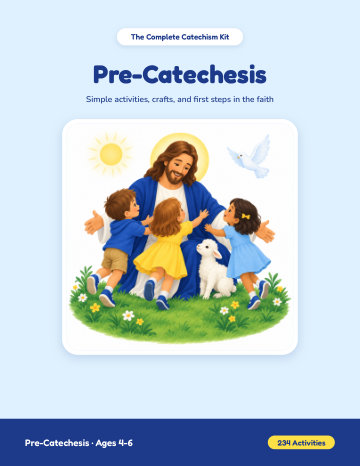
Ages 4-6Pre-Catechesis
234 simple activities for the youngest: coloring pages, mazes, connect-the-dots pages, cut-and-paste activities, and simple crafts. 237 pages.
Download the PDFOpen in browser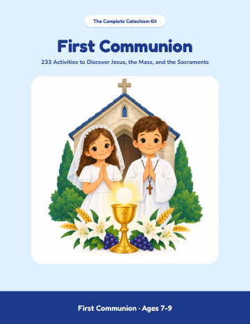
Ages 7-9First Communion
233 activities to discover Jesus, the Mass, and the sacraments, with answer keys. 266 pages.
Download the PDFOpen in browser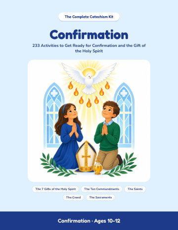
Ages 10-12Confirmation
233 activities to get ready for Confirmation and the gift of the Holy Spirit, with answer keys. 245 pages.
Download the PDFOpen in browser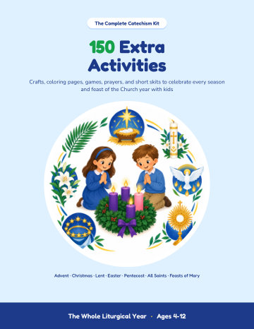
Ages 4-12150 Extra Activities
The seasons and feasts of the Church year: Advent, Christmas, Lent, Easter, Pentecost, All Saints’ Day, and the feasts of Mary. 152 pages.
Download the PDFOpen in browserYour 7 Bonuses
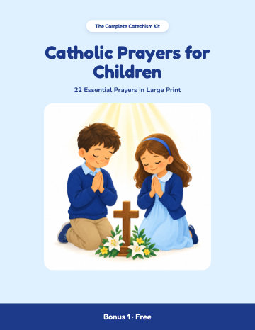
Bonus 1Catholic Prayers for Children
22 essential prayers in large print. 23 pages.
Download the PDFOpen in browser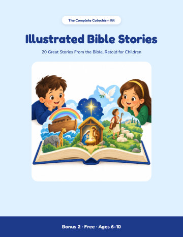
Bonus 2Illustrated Bible Stories
20 great stories from the Bible to read with children ages 6-10. 43 pages.
Download the PDFOpen in browser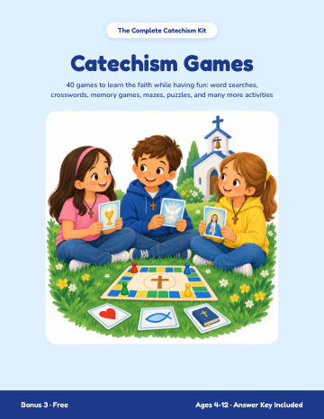
Bonus 3Catechism Games
40 games: word searches, crosswords, mazes, memory games, and quizzes, with an answer key. 50 pages.
Download the PDFOpen in browser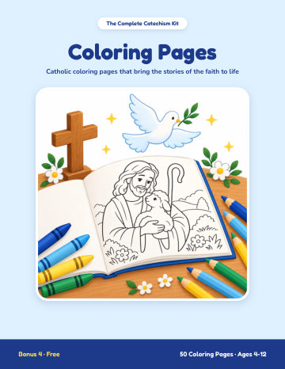
Bonus 4Coloring Pages
50 coloring pages from the Bible, the sacraments, and the lives of the saints, each with a verse or a quote to remember. 51 pages.
Download the PDFOpen in browser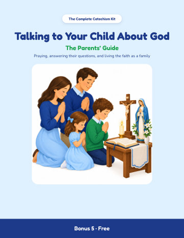
Bonus 5Talking to Your Child About God · The Parents’ Guide
Praying as a family, answering the big questions, and talking about faith at every age. 22 pages.
Download the PDFOpen in browser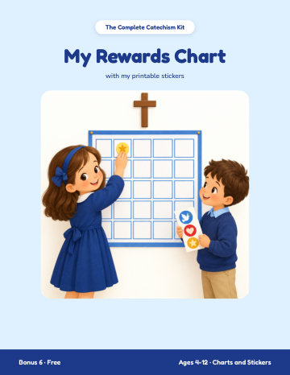
Bonus 6My Rewards Chart
Weekly and monthly charts, Advent and Lent paths, stickers, and a diploma. 13 pages.
Download the PDFOpen in browser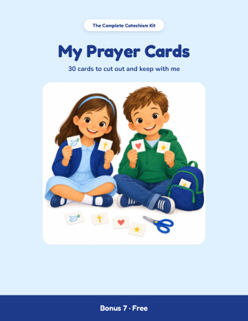
Bonus 7My Prayer Cards
30 cards to cut out: prayers, Bible verses, and sayings of the saints. 8 pages.
Download the PDFOpen in browserWhere to Start
- Download the book that fits the child’s age: Pre-Catechesis, First Communion, or Confirmation.
- Print on Letter paper (8.5 × 11 in) at 100% (choose "Actual size" in the print dialog box). Each activity fits on one page.
- Keep the bonuses close at hand: the prayers, stories, and games go along with every lesson.
For personal use at home, in your parish, or in the classroom. Resale and redistribution are prohibited.